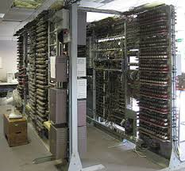

Il Colossus
Il Colossus, costruito nel 1944 presso il GCHQ di Bletchley Park nel Buckinghamshire come parte del programma condotto da Alan Turing con l'aiuto dell'esperto in centralini telefonici T. H. Flowers. Faceva parte del progetto bellico per decifrare i messaggi tedeschi prodotti da Enigma. A Bletchley Park, non lontano da Londra, erano stati raccolti centinaia di esperti di enigmistica, maestri di scacchi, matematici, meccanici di precisione ed elettrotecnici: lo scopo era di cercare di interpretare i circa 2.000 messaggi segreti intercettati ogni giorno al nemico, molti provenienti addirittura da Adolf Hitler. I risultati furono importanti, tanto che negli anni successivi si continuò a migliorare l'apparato e a costruirne di nuovi, fino ad avere ben 211 macchine operative nel maggio del 1945, con 2000 tecnici che le assistevano. Il progetto era talmente segreto, che Winston Churchill ne ordinò la distruzione alla fine della seconda guerra mondiale. Solo negli anni novanta, in seguito alla declassificazione dei relativi documenti, si è giunti a conoscenza della sua esistenza. Anche questa macchina era Turing-completa.
